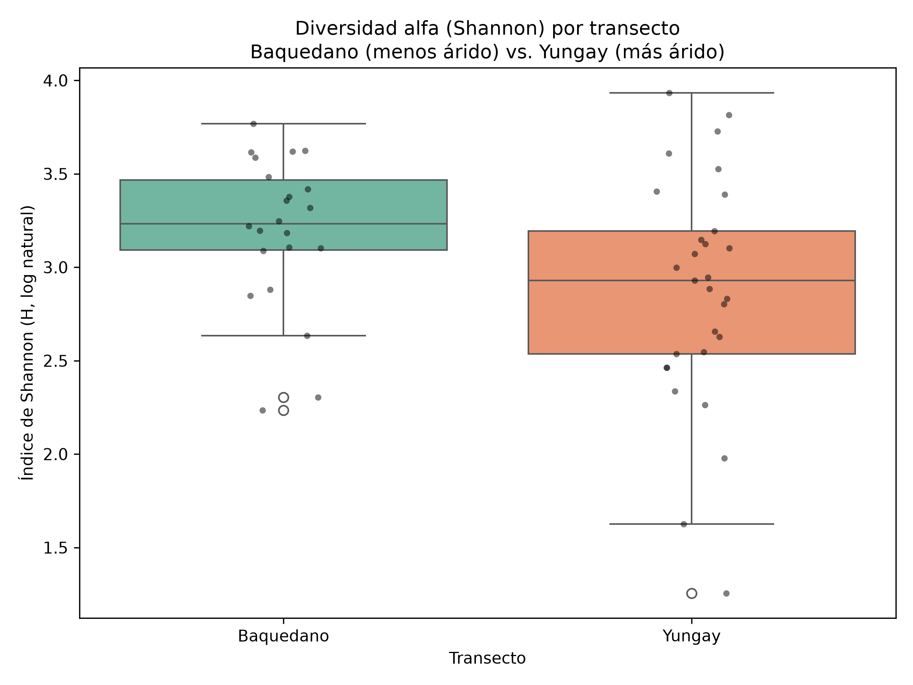
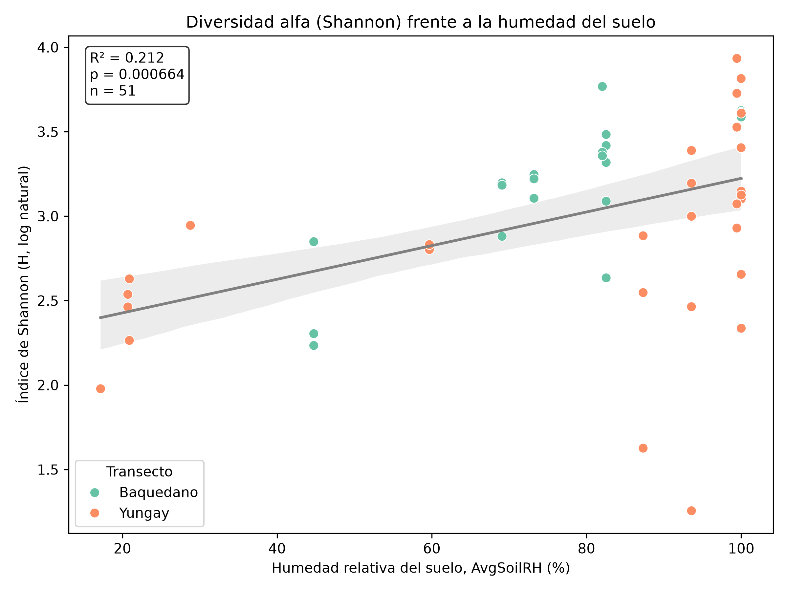
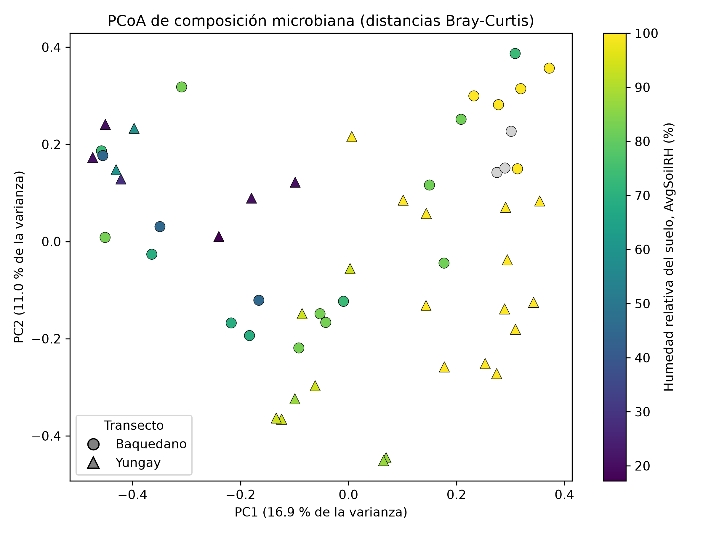

Informe del Módulo 8 · Reproduciendo a Neilson et al. (2017) en el desierto de Atacama · Diversidad alfa y beta
El desierto de Atacama es uno de los lugares más secos del planeta. Queríamos comprobar si los suelos más secos tienen comunidades de microbios más pobres y distintas que los suelos algo más húmedos. Trabajamos con dos transectos: Baquedano (menos árido) y Yungay (más árido).
Para responder, pusimos a prueba tres hipótesis:
| Hipótesis | Qué dice |
|---|---|
| H1 | A menor humedad del suelo, menor diversidad dentro de cada muestra (índice de Shannon). |
| H2 | Yungay (seco) y Baquedano (húmedo) tienen comunidades de composición distinta. |
| H3 | La humedad explica la composición mejor que la temperatura o la elevación. |
Dos tablas: una con cuántos microbios de cada tipo (1 109 tipos, llamados OTUs) hay en cada muestra, y otra con las condiciones ambientales de cada muestra (humedad, temperatura, elevación...). Solo 54 muestras tenían los dos tipos de dato, así que trabajamos con esas.
Cruzamos las muestras que aparecían en ambos archivos y nos quedamos con las 54 comunes (25 de Baquedano, 29 de Yungay). Es como emparejar cada muestra de suelo con su "ficha" de condiciones ambientales.
Para cada muestra calculamos el índice de Shannon, un número que resume dos cosas: cuántos tipos de microbio hay y si están repartidos de forma equilibrada.
Piénsalo como un bosque: un valor de Shannon alto es un bosque con muchas especies de árbol bien mezcladas; uno bajo es un bosque con dos o tres especies dominando todo.

Después comparamos el Shannon de cada muestra con su humedad del suelo mediante una regresión y una correlación de Spearman (el mismo método del paper).

Calculamos la distancia de Bray-Curtis entre cada par de muestras: un número de 0 (composición idéntica) a 1 (no comparten ningún microbio). Con esas distancias hicimos una ordenación PCoA, que coloca las muestras en un mapa donde las más parecidas quedan cerca.
Es como un mapa de "parecido": dos pueblos con la misma gastronomía aparecen juntos; dos con comidas muy distintas, lejos.
De los 1 109 tipos de microbio, muchísimos aparecían en solo 1 o 2 muestras y solo añadían ruido. Nos quedamos con los 37 OTUs "core" (presentes en al menos el 10 % de las muestras). Al hacerlo, el patrón ambiental se vio mucho más claro: el porcentaje de variación explicado por el primer eje pasó de 8.6 % a 16.9 %, y la humedad pasó a ser la variable más importante.
Con una prueba estadística llamada PERMANOVA (999 barajados al azar) medimos cuánta variación en la composición explica cada variable ambiental por separado.

| Variable | Varianza explicada (R²) | p |
|---|---|---|
| Humedad (AvgSoilRH) | 0.114 (la mayor) | 0.001 |
| Temperatura | 0.110 | 0.001 |
| Elevación | 0.107 | 0.001 |
| Hipótesis | Resultado | ¿Se apoya? |
|---|---|---|
| H1 · humedad → diversidad | R² = 0.21; ρ = 0.47; p < 0.001 | ✔ Sí |
| H2 · separación de transectos | Real pero débil (R² = 0.05); se solapan bastante | ◑ Parcial |
| H3 · humedad domina | Es la nº 1 (R² = 0.11) pero casi empatada | ◑ Dirección correcta, efecto moderado |
solution.py — todo el análisish1_diversidad_alfa.tsv — Shannon por muestra + statsh1_resumen_shannon_por_transecto.tsvh1_regresion_shannon_vs_humedad.tsvh2_varianza_explicada_pcoa.tsvh3_permanova_variables_ambientales.tsvfig1_shannon_por_transecto (png/pdf)fig1_shannon_vs_avgsoilrh (png/pdf)fig2_pcoa_braycurtis (png/pdf)